Little Delvings
Search Tolkien
Digital Tolkien Project
These are little visualizations based on the text and annotations of the Digital Tolkien Project.
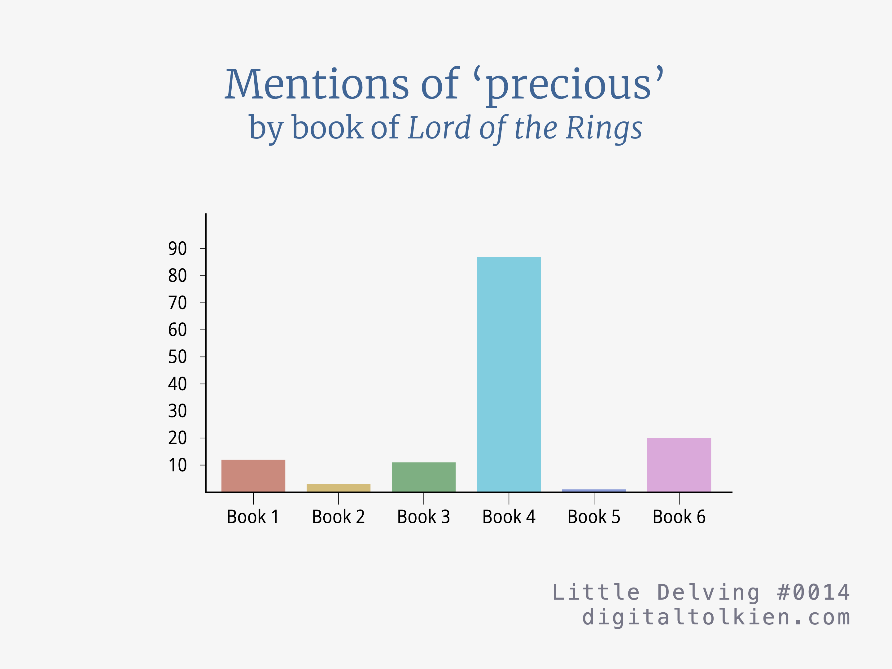
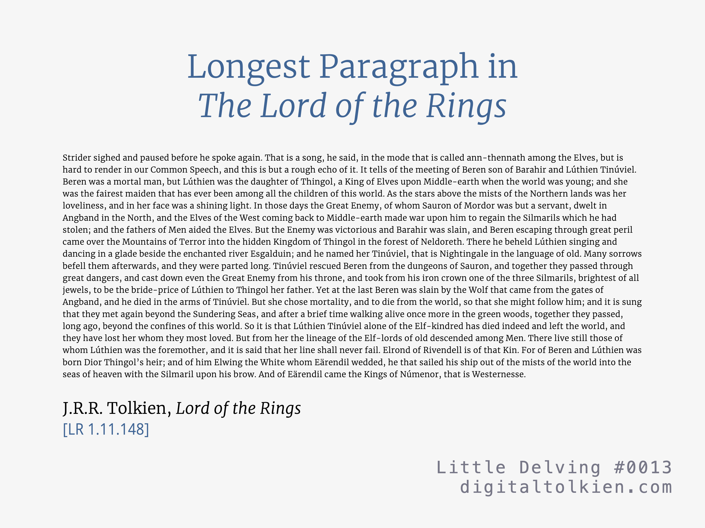
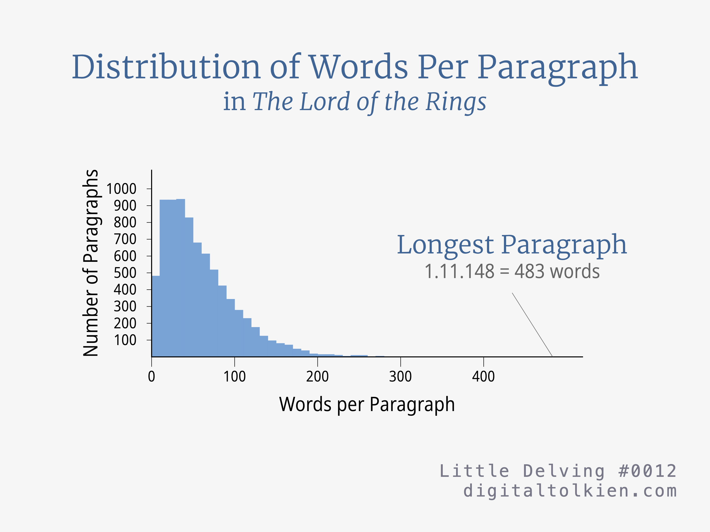
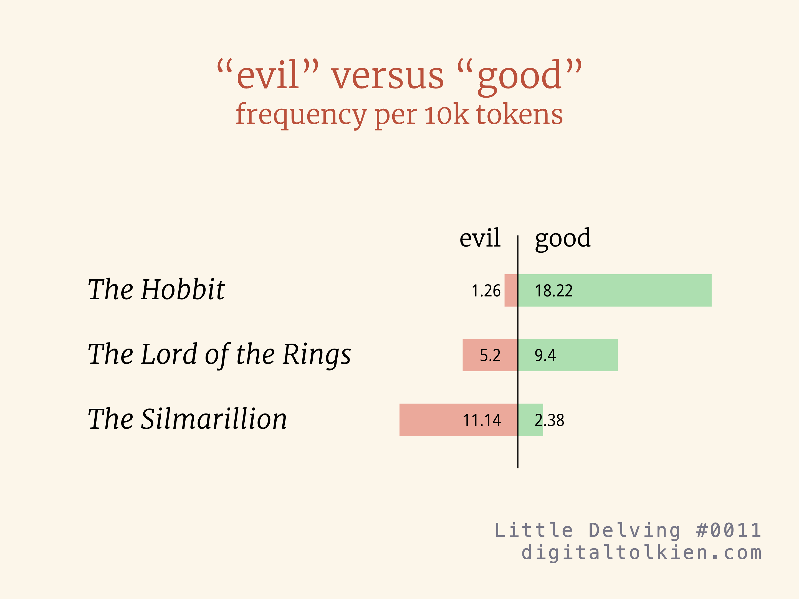
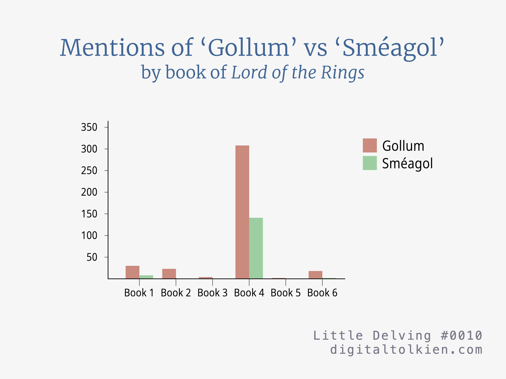
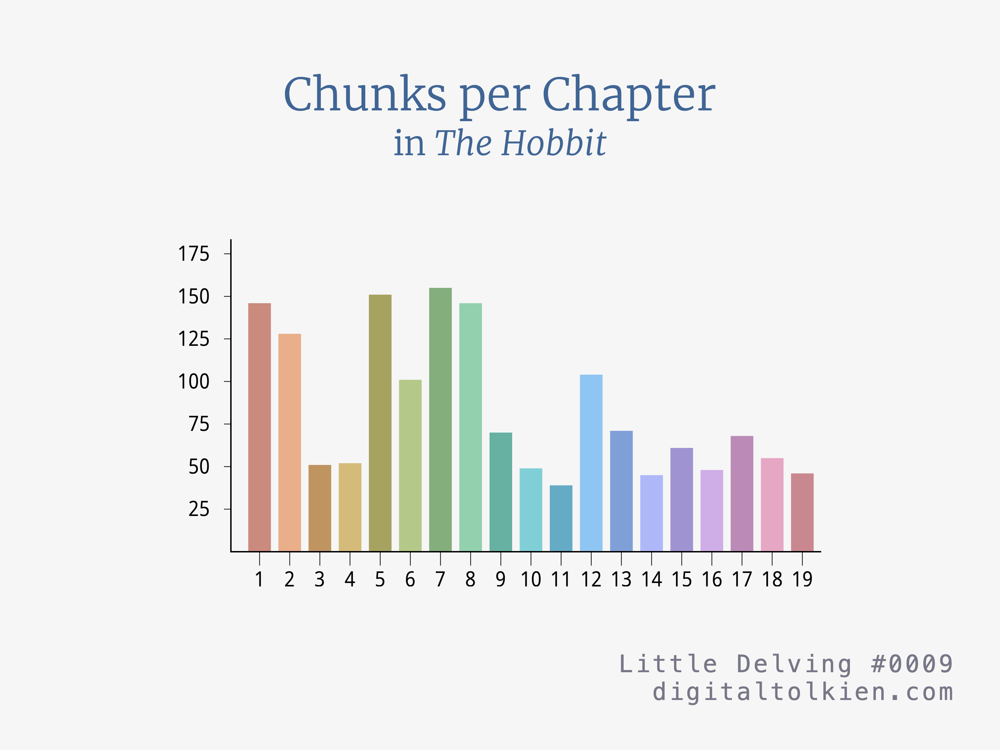
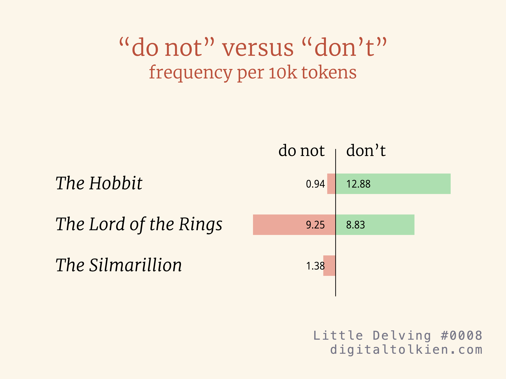
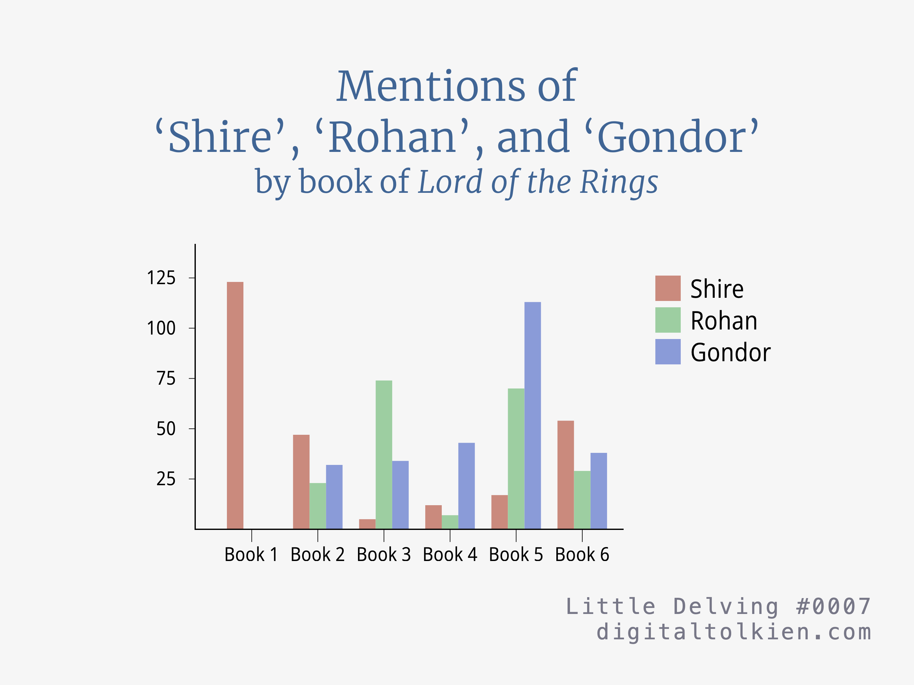
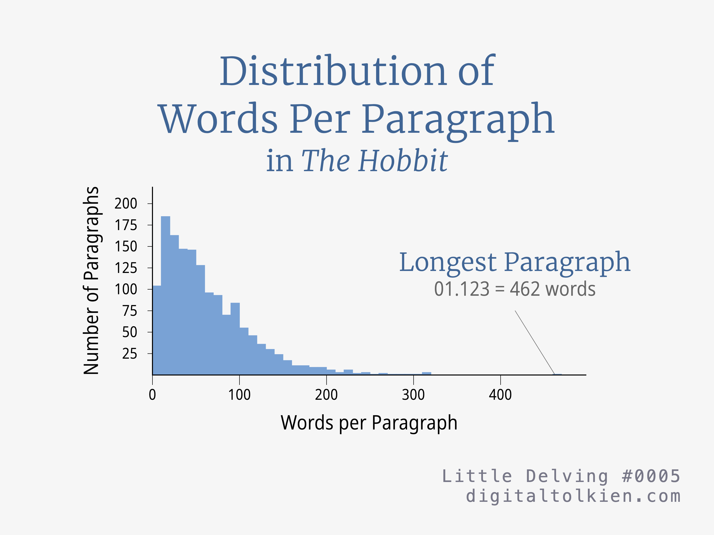
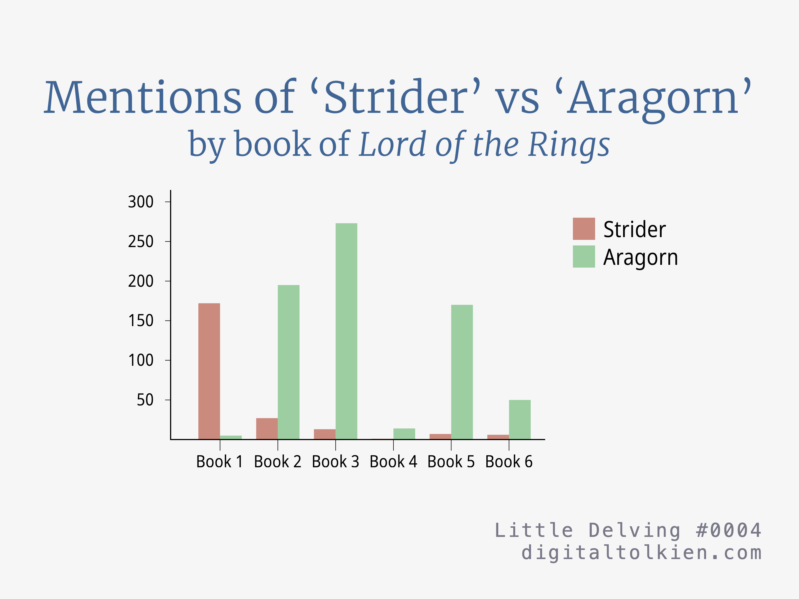
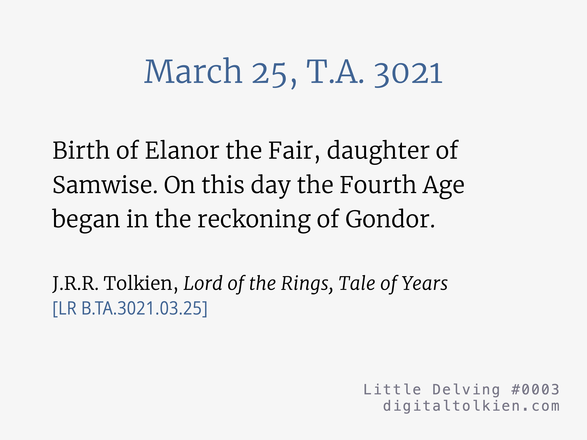
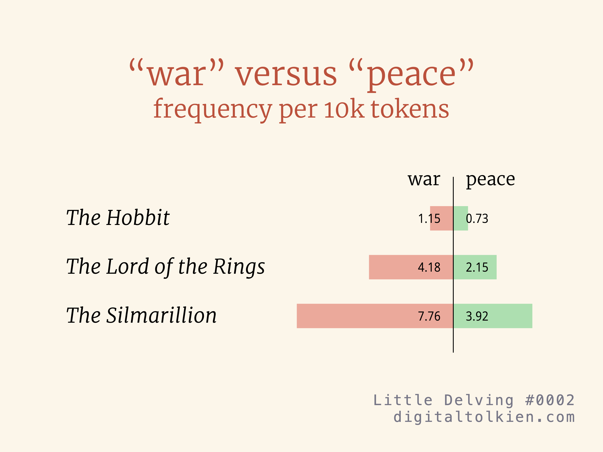
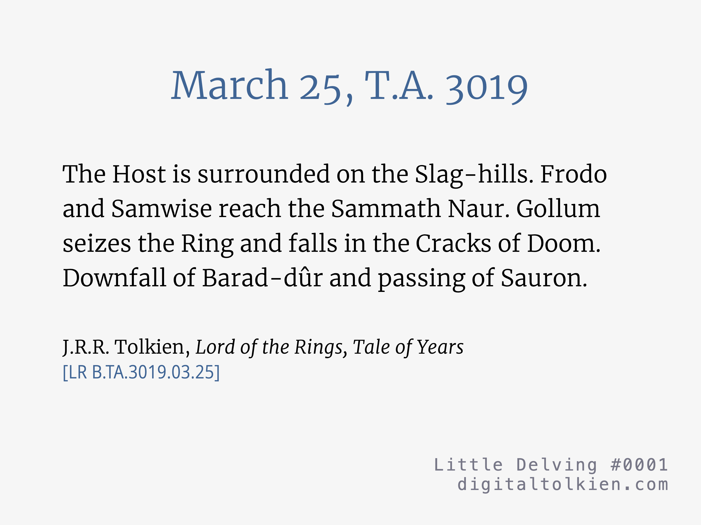
![Longest Paragraph in The Hobbit
Undoubtedly that was what brought the dragon. Dragons steal gold and jewels, you know, from men and elves and dwarves, wherever they can find them; and they guard their plunder as long as they live (which is practically for ever, unless they are killed), and never enjoy a brass ring of it. Indeed they hardly know a good bit of work from a bad, though they usually have a good notion of the current market value; and they can’t make a thing for themselves, not even mend a little loose scale of their armour. There were lots of dragons in the North in those days, and gold was probably getting scarce up there, with the dwarves flying south or getting killed, and all the general waste and destruction that dragons make going from bad to worse. There was a most specially greedy, strong and wicked worm called Smaug. One day he flew up into the air and came south. The first we heard of it was a noise like a hurricane coming from the North, and the pine-trees on the Mountain creaking and cracking in the wind. Some of the dwarves who happened to be outside (I was one luckily—a fine adventurous lad in those days, always wandering about, and it saved my life that day)—well, from a good way off we saw the dragon settle on our mountain in a spout of flame. Then he came down the slopes and when he reached the woods they all went up in fire. By that time all the bells were ringing in Dale and the warriors were arming. The dwarves rushed out of their great gate; but there was the dragon waiting for them. None escaped that way. The river rushed up in steam and a fog fell on Dale, and in the fog the dragon came on them and destroyed most of the warriors—the usual unhappy story, it was only too common in those days. Then he went back and crept in through the Front Gate and routed out all the halls, and lanes, and tunnels, alleys, cellars, mansions and passages. After that there were no dwarves left alive inside, and he took all their wealth for himself. Probably, for that is the dragons’ way, he has piled it all up in a great heap far inside, and sleeps on it for a bed. Later he used to crawl out of the great gate and come by night to Dale, and carry away people, especially maidens, to eat, until Dale was ruined, and all the people dead or gone. What goes on there now I don’t know for certain, but I don’t suppose any one lives nearer to the Mountain than the far edge of the Long Lake now-a-days.
J.R.R. Tolkien, The Hobbit
[H 01.123]
Little Delving #0006
digitaltolkien.com](images/0006.png)